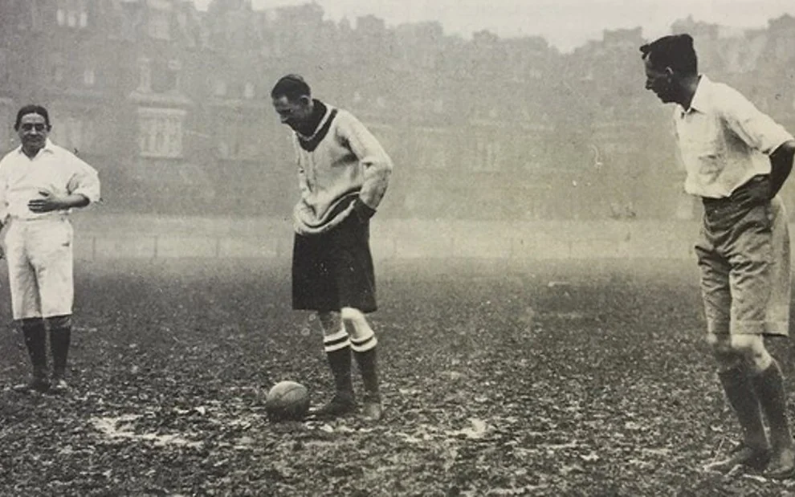
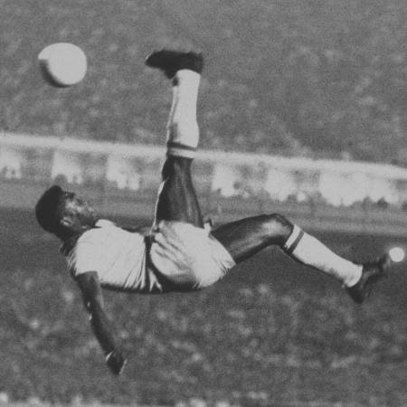
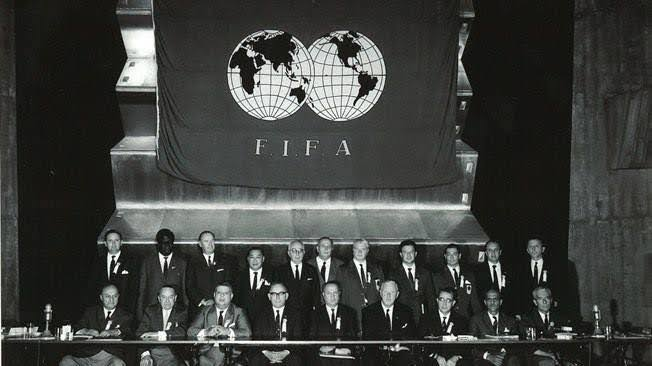
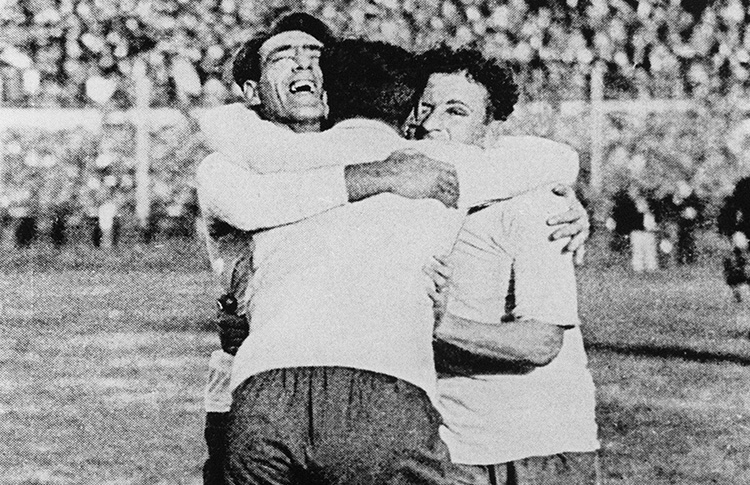
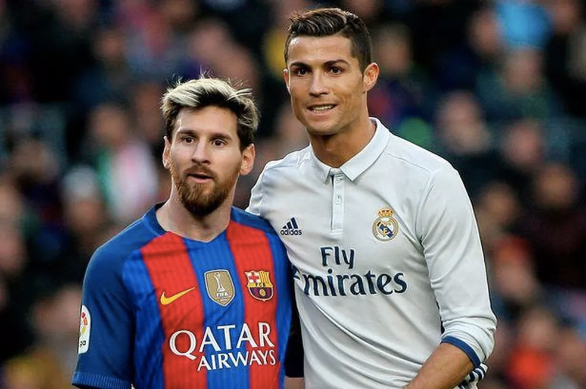

Nasce o futebol moderno
O futebol moderno surgiu na Inglaterra, onde diferentes escolas jogavam com regras próprias. Para organizar a prática, foi fundada em 1863 a Football Association, responsável por unificar as normas do jogo.
Foi nesse período que o futebol se separou do rugby: ficou definido o uso dos pés, o tamanho do campo e a proibição de carregar a bola com as mãos. A partir daí, o esporte ganhou identidade própria.

O futebol chega ao Brasil
O futebol chegou ao Brasil em 1894, trazido por Charles Miller, que retornou da Inglaterra com uma bola e um livro de regras. No início, o esporte ficou restrito a clubes e comunidades, mas logo se popularizou.
Com o passar das décadas, o Brasil se tornou uma das maiores potências do futebol mundial. As conquistas de 1958, 1962 e 1970 ajudaram a transformar o esporte em parte da identidade nacional.

A criação da FIFA
Com o crescimento do futebol pelo mundo, representantes de sete países se reuniram em Paris em 1904 e fundaram a FIFA, a Federação Internacional de Futebol. O objetivo era organizar o esporte em escala mundial e aproximar as associações nacionais.
A partir da fundação, a FIFA passou a coordenar competições internacionais e a padronizar as regras do jogo, criando as bases para o futebol globalizado que conhecemos hoje.

A primeira Copa do Mundo
Em 1930, o Uruguai sediou a primeira Copa do Mundo da história. Treze seleções participaram do torneio, que reuniu equipes da América do Sul, da Europa e da América do Norte em uma competição inédita.
O Uruguai foi o campeão ao vencer a Argentina por 4 a 2 na final, disputada no Estádio Centenário. O torneio marcou o início de uma das maiores competições esportivas do planeta.

O esporte mais popular do planeta
Atualmente, o futebol é praticado em praticamente todos os países. Grandes craques, clubes históricos e competições continentais mantêm a paixão viva e aproximam milhões de torcedores a cada temporada.
O futebol feminino também cresce ano após ano, ganhando espaço e reconhecimento. Mais do que um esporte, o futebol continua sendo uma das maiores expressões culturais do mundo.